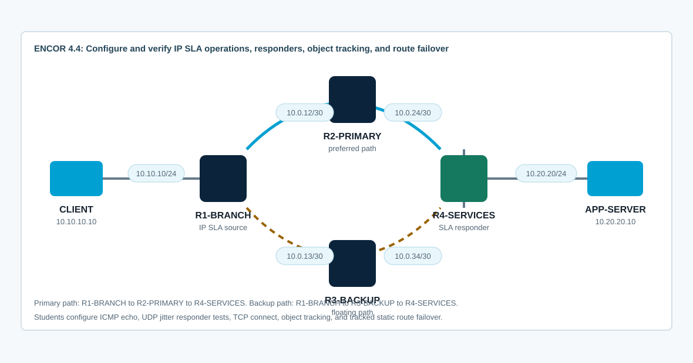

Overview
This lab targets ENCOR 4.4: configure and verify IP SLA. You will configure ICMP echo operations, bind reachability to object tracking, use tracked static routes for path failover, run responder-based UDP jitter tests, and validate a TCP service with an IP SLA TCP connect operation.
CCNP-level value comes from proving what the probe measures and what the network does with the result. You will distinguish probe success from application success, source-interface reachability from destination reachability, one-way path issues from round-trip delay, and route installation from forwarding behavior.
Topology
R1-BRANCH reaches APP-SERVER through a primary path via R2-PRIMARY and a backup path via R3-BACKUP. R4-SERVICES is the service-edge router and IP SLA responder. The starting CML topology has addressing and routing only; IP SLA operations, object tracking, and tracked routes are intentionally absent.

Task 1: Baseline Routing and Traffic
Confirm the routed paths before adding probes. IP SLA cannot fix a broken topology, and tracked routing is hard to interpret if you do not know the baseline path.
show ip interface brief
show ip route
show ip cef 10.20.20.10
traceroute 10.20.20.10 source 10.10.10.1
ping 10.20.20.10 source 10.10.10.1
show running-config | section ip sla
show trackFrom CLIENT, generate baseline traffic:
ping -c 5 10.20.20.10
traceroute 10.20.20.10
wget -O- http://10.20.20.10The initial traceroute should use the primary path through R2-PRIMARY.
Task 2: Configure an ICMP Echo IP SLA Operation
Configure R1-BRANCH to probe the application server address using a stable source interface. Tune frequency, timeout, and threshold so you can interpret the result.
! R1-BRANCH
ip route 10.0.24.0 255.255.255.252 Ethernet0/1 10.0.12.2
!
ip sla 10
icmp-echo 10.0.24.2 source-interface Ethernet0/1
frequency 5
timeout 1000
threshold 200
ip sla schedule 10 start-time now life forever
!
show ip sla configuration 10
show ip sla statistics 10
show ip sla summaryDepth check: IP SLA 10 intentionally probes 10.0.24.2, the R4 address reachable only through the primary path. If you probe the application server itself, the operation can recover through the backup path and reinstall the broken primary route, causing route flapping.
Task 3: Bind IP SLA to Object Tracking and Static Routes
Use the IP SLA return code to track primary-path reachability, then replace the existing untracked service route with a tracked primary static route and a floating backup static route.
! R1-BRANCH
track 10 ip sla 10 reachability
delay down 10 up 5
!
no ip route 10.20.20.0 255.255.255.0 10.0.12.2
ip route 10.20.20.0 255.255.255.0 Ethernet0/1 10.0.12.2 track 10
ip route 10.20.20.0 255.255.255.0 Ethernet0/2 10.0.13.2 200
!
show track 10
show ip route 10.20.20.0
show ip sla statistics 10Test SLA-driven failover by shutting the R2-PRIMARY link toward R4-SERVICES. This breaks the primary path beyond R1's next hop while leaving R1's local primary interface up.
! R2-PRIMARY
interface Ethernet0/1
shutdown
!
! R1-BRANCH
show track 10
show ip route 10.20.20.0
traceroute 10.20.20.10 source 10.10.10.1
!
! R2-PRIMARY
interface Ethernet0/1
no shutdownDepth check: Tracking the far server catches more than local link failure. Tracking only the interface line protocol would miss upstream black holes beyond the first hop.
Task 4: Configure UDP Jitter with an IP SLA Responder
Configure R4-SERVICES as an IP SLA responder, then configure R1-BRANCH to measure UDP jitter toward R4. UDP jitter operations are useful for voice-style metrics because they report delay variation, packet loss, and round-trip data beyond basic reachability.
! R4-SERVICES
ip sla responder
show ip sla responder
!
! R1-BRANCH
ip sla 20
udp-jitter 10.20.20.1 16384
frequency 10
timeout 2000
threshold 1000
ip sla schedule 20 start-time now life forever
!
show ip sla configuration 20
show ip sla statistics 20
show ip sla statistics 20 detailsInterpret these fields: latest RTT, packet loss, one-way delay if timestamps are usable, jitter source-to-destination, jitter destination-to-source, and operation return code.
Task 5: Configure TCP Connect to Validate an Application Port
Configure a TCP connect operation from R1-BRANCH to APP-SERVER on TCP/80. This tests application-port reachability more directly than ICMP echo.
! R1-BRANCH
ip sla 30
tcp-connect 10.20.20.10 80 control disable source-ip 10.10.10.1
frequency 10
timeout 2000
threshold 500
ip sla schedule 30 start-time now life forever
!
show ip sla configuration 30
show ip sla statistics 30
show ip sla summaryCompare IP SLA 10 and IP SLA 30. If ICMP succeeds but TCP connect fails, routing is probably not the problem; investigate application state, ACLs, firewalling, or the wrong destination port.
Task 6: Verify Operations, History, and Control-Plane Impact
Use multiple views to prove that the operations are scheduled, returning expected codes, and influencing routing only where intended.
show ip sla summary
show ip sla statistics
show ip sla statistics 10 details
show ip sla statistics 20 details
show ip sla statistics 30 details
show track
show track 10
show ip route 10.20.20.0
show running-config | section ip sla
show running-config | include ^track|^ip route 10.20.20.0Answer these:
- Which operation proves only IP reachability?
- Which operation requires the IP SLA responder?
- Which operation proves TCP/80 is open?
- Which object changes the routing table?
- What delay timers protect the route from flapping?
Task 7: Troubleshoot IP SLA Defects
Use symptoms and show output before changing configuration.
- The operation is configured but never scheduled, so no statistics update.
- The schedule command is entered as
life forever start-time nowand the operation stays inactive; usestart-time now life foreveron this image. - The source interface is wrong, so the return path is missing or the probe uses an unexpected address.
- The ICMP probe tracks the final application server, which remains reachable over the backup path and causes route flapping. Track a primary-path-specific target instead.
- The timeout is shorter than the real path delay, causing false failures.
- The tracked route is installed but the floating backup route has a lower administrative distance than intended.
- UDP jitter fails because the responder is not enabled on the target router or because the default threshold is greater than the configured timeout.
- ICMP succeeds but TCP connect fails because the service is not listening, the port is filtered, or
control disablewas omitted when probing a normal TCP server. - Failover works, but failback flaps because no track delay was configured.
debug ip sla trace
debug track
show logging
show ip sla statistics
show ip sla application
show track brief
show ip route static
show interfaces Ethernet0/1
show interfaces Ethernet0/2